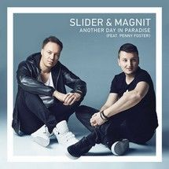
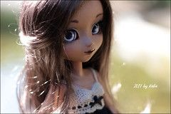

Donnez-moi une suite au Ritz, Je n'en veux pas Des bijoux de chez Chanel, Je n'en veux pas Donnez moi une limousine, J'en ferais quoi
[Intro]Excuse me, can I please talk to you for a minute?
Rollerskates, them linesHot sun and clear blue skiesThe waves are crashing byAnd when she passed me byAnd gave a wink and smile
Oh, no See you walking 'round like it's a funeral Not so serious, girl; why those feet cold? We just getting started; don't you tiptoe, tiptoe, ah
Turn your magic onUmi she'd sayEverything you want's a dream awayAnd we are legends every dayThat's what she told me

It’s another day without your love.I keep on holding on but it’s too much.It’s another day I’m burning up.I keep on holding on us strong,
Come on now!
Sit down girl! I think I love ya!And all I want you to do, is repeat after meSay A, say B, say C, oh I think she's got it

Сверкают сотни снежинок за моим окном.От миллионов улыбок тает снег кругом.А я любовь нарисую, вьюгой на стекле.И навсегда расколдую сказку о тебе.
Припев:Ломаем стереотипы со скоростью дикойСкажи, Анжелика, где твой король?Ломаем стереотипы!На губы черникой,
Кружатся снежинки за окном.Рождество к тебе приходит в дом.Радость, сожаление, Каждое мгновениеНавсегда останется в сердце твоём.
Не всегда, не у всех получаетсяИногда половинки теряютсяЗасыпая, не там просыпаются где-тоЯ вошла, ты забыл про дыхание
Цей білий сніг дику гору обліг. Навіть сліду тут нема. Безлюдне неначе царство, а царюю я сама. І завиває вітер, хуга в серці зла.
Even when the thunder and storm begins I'll be standing strong like a tree in the wind Nothing's gonna move this mountain Or change my direction
Иногда все расстояния сильнее, чем любовь.И тогда одно желание - к тебе вернуться вновь.Дождём весенним в самом белом феврале
Припев:На стене в твоем подъезде я пишу тебе письмо,Начинаю на десятом, а закончу на восьмом.Ты обычная девчонка, я не принц и не герой,
Я его придумала и поверила,А когда увидела так и замерла.
Пусть стала свободной, лучше так,К тебе он холодный, но не враг,Простужена очень декабрём,Одна по ночам и для него.
時の流れは無常であなたと私を引き離す愛を何度 叫んでも想い出だけは置き去りのまま心の闇に気付けなかった自分がいつまで経っても許せないお願い 助けて心が崩れて苦しい
辛子色のシャツ追いながら飛び乗った電車のドアいけないと知りながら 振り向けば隠れた街は色づいたクレヨン画 涙まで染めて走る年上の人に会う 約束と知っててSeptember そしてあなたはSeptember 秋に変わった
There ain`t nothing I can do Nothing I can say That folks criticize me But I`m gonna do just as I want to anyway